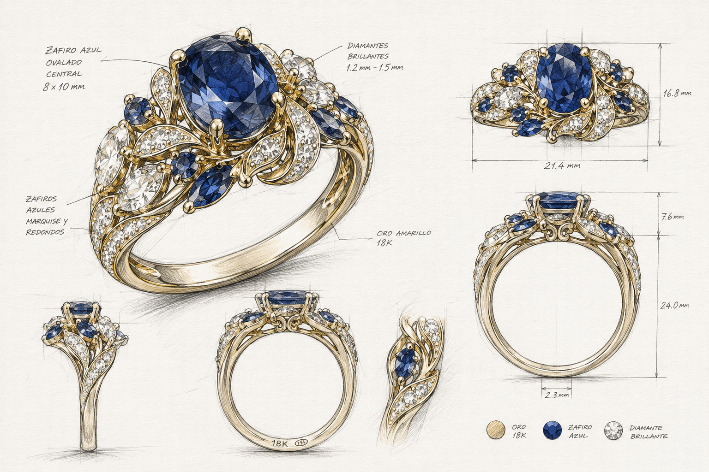
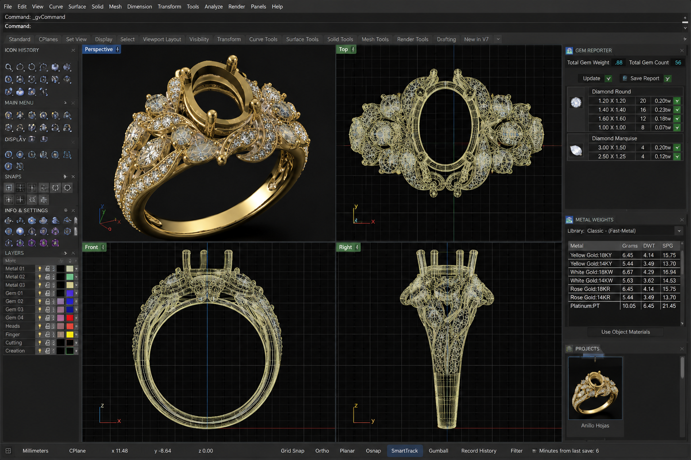
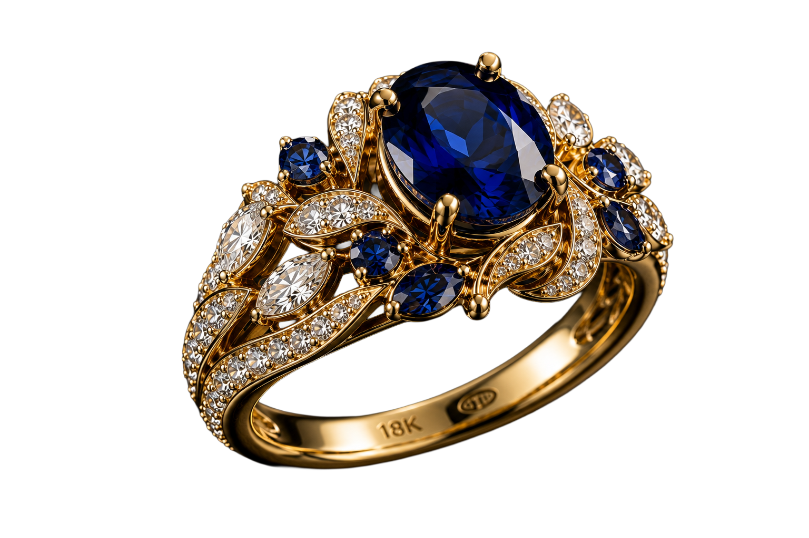
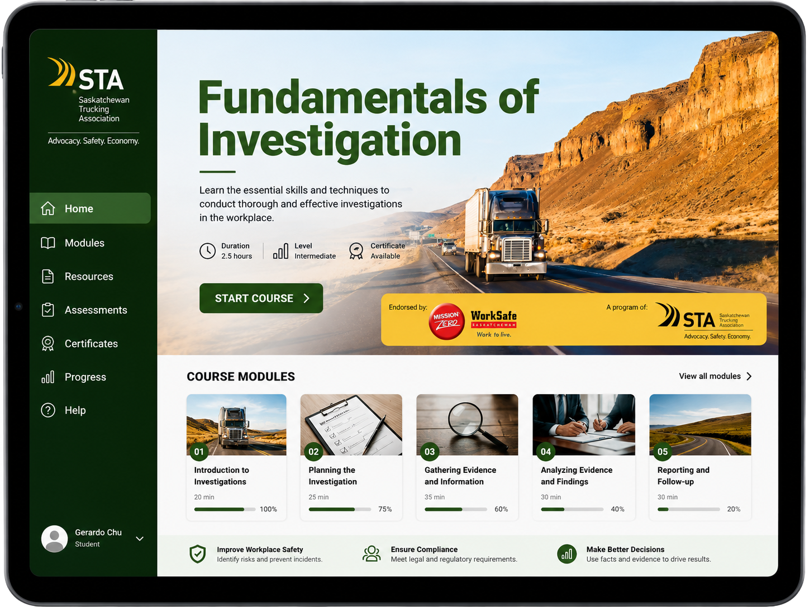
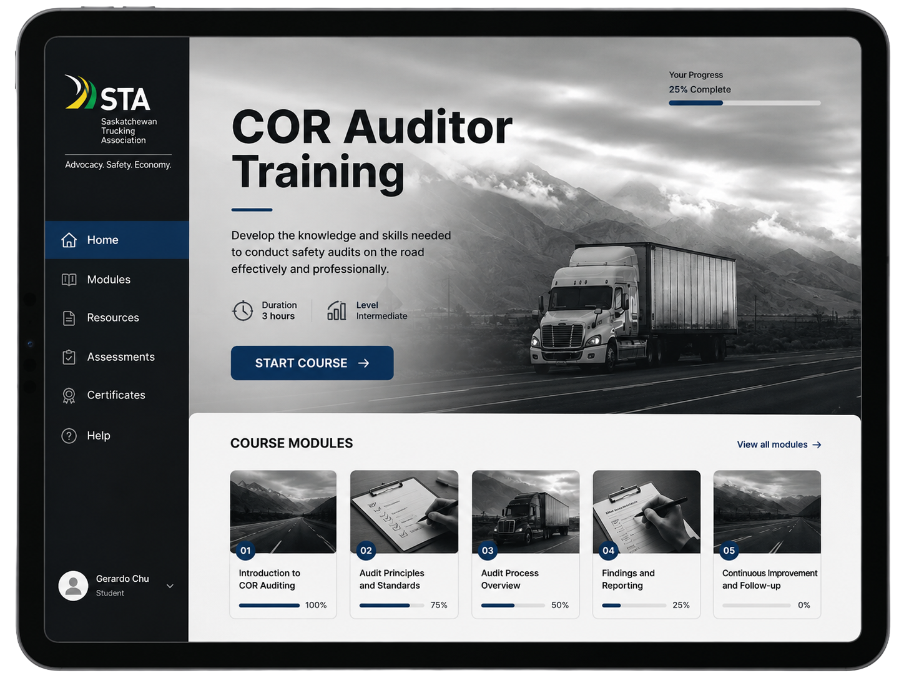
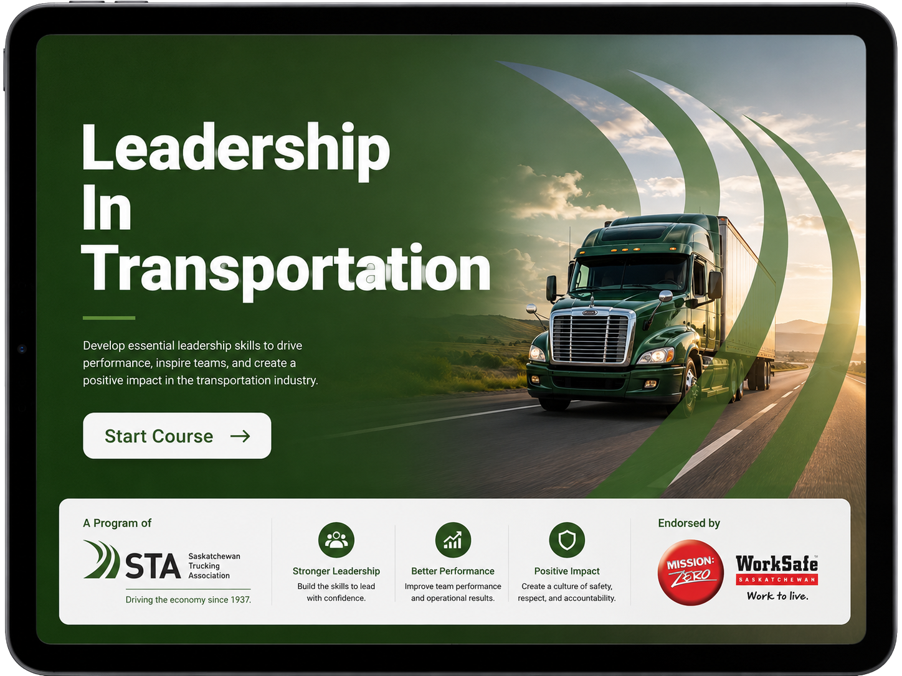
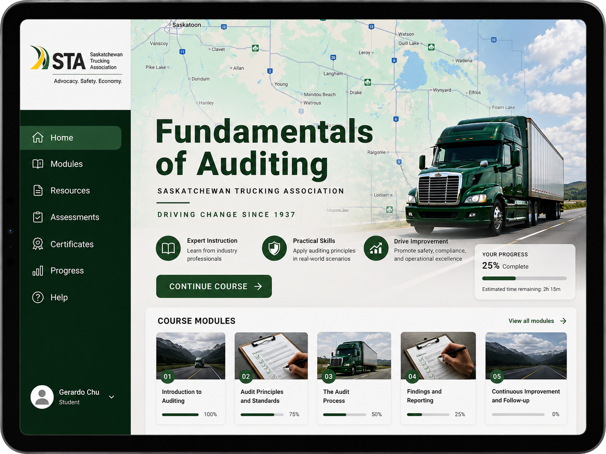

2007
FORMACIÓN 01 / 07
El comienzo
de una visión.
Bachiller en Diseño Gráfico
Toulouse Lautrec · Lima, Perú
DISEÑO ·
EXPLORAR ↓DISEÑO PARA RESOLVER PROBLEMAS,
COMUNICAR IDEAS Y CREAR
EXPERIENCIAS CON IMPACTO.
QUIÉN SOY
TRAYECTORIA
SCROLL PARA EXPLORAR ↓
FORMACIÓN 01 / 07
Bachiller en Diseño Gráfico
Toulouse Lautrec · Lima, Perú
FORMACIÓN 02 / 07
Máster en Diseño Editorial, Impreso y Digital
IED Instituto Europeo di Design · Barcelona, España
INDEPENDIENTE 03 / 07
Diseñador Gráfico Freelance
Branding, diseño editorial, publicidad y comunicación visual.
EXPERIENCIA PROFESIONAL 04 / 07
Jefe del Área de Diseño / Especialista en Diseño 3D
ARIN S.A. · Lima, Perú
Desarrollo de colecciones de joyería, modelado 3D, prototipado, procesos de fabricación y dirección de proyectos.
FORMACIÓN 05 / 07
Diplomado en Equipos de Alto Rendimiento
Universidad Peruana de Ciencias Aplicadas (UPC) · Lima, Perú
EXPERIENCIA PROFESIONAL 06 / 07
Online Course Developer | Marketing & Communications
Saskatchewan Trucking Association · Regina, Canadá
Experiencias de aprendizaje virtual, contenido multimedia, animación y comunicación para programas de formación.
FORMACIÓN 07 / 07
Diploma en Diseño Interactivo y Tecnología
Saskatchewan Polytechnic · Regina, Canadá
Una nueva etapa que integra diseño, tecnología y experiencias digitales.
Comercial conceptual creado mediante dirección de arte, inteligencia artificial y producción audiovisual para explorar la narrativa visual de una marca de lujo.
Diseño y Desarrollo de Producto
Más de una década desarrollando colecciones de joyería para producción comercial. Mi experiencia comprende diseño conceptual, modelado 3D, desarrollo técnico y preparación de piezas para producción.
Diseño y Desarrollo de Producto

Diseño y Desarrollo de Producto

Diseño y Desarrollo de Producto

Diseño y Desarrollo de Producto
· E-LEARNING
Diseño instruccional · Experiencias digitales · Formación profesional




BRANDING · CAMPAÑA CONCEPTUAL

BREWED FOR BRIGHTER DAYS
Desarrollo de identidad visual y campaña publicitaria para una marca conceptual de cerveza.

BLOOM · MOTION CAMPAIGN
Una identidad diseñada para cobrar vida.

GOOD PEOPLE · GOOD MOMENTS · GOOD BEER

BEYOND THE ORDINARY

El origen de una pausa
extraordinaria.
ORIGIN / CRAFT / CHARACTER
 FILM STUDY / 001
FILM STUDY / 001
SLOW DOWN. TUNE IN.

THE RITUAL CONTINUES
Take your time.
04 / HERRAMIENTAS
05 / CONTACTO
¿TIENES UN PROYECTO EN MENTE?
Diseño, ideas y experiencias que conectan. Cuéntame qué tienes en mente y exploremos cómo llevarlo a la realidad.
kayaa13@gmail.com ↗